금속재료기사 (2016-05-08 기출문제)
1과목: 금속조직학
1. 강의 마텐자이트 변태시 Ms 점을 강하시키는 경우는?
- 결정립의 조대화에 의해
- 높은 오스테나이트화 온도에 의해
- Co, Al 등 첨가원소의 영향에 의해
- Ms 점 직상에서의 가공응력에 의해
(정답률: 64%)

2. 순철의 상태도에서 가열시 γ-Fe이 나타나는 변태를 나타내는 것은?
- Ac2
- Ar2
- Ac3
- Ar3
(정답률: 82%)
3. 스피노달 분해(spinodal decomposition)에 관한 설명으로 틀린 것은?
- (d2G/dX2) ＜ 0 이 만족될 때 스피노달 분해가 일어난다.
- 합금의 조성이 스피노달 영역 밖에 존재하면 합금은 준안정상태가 된다.
- 스피노달 조성 밖의 합금에서는 변태가 핵의 생성과 성장과정에 의해 진행되어야 한다.
- 스피노달 분해가 일어나기 위해서는 합금은 자유에너지 곡선상에서 두 변곡점 사이의 조성을 가져서는 안 된다.
(정답률: 75%)
4. 금속의 변태점 측정방법이 아닌 것은?
- 비열법
- 열분석법
- 자기분석법
- 성분분해법
(정답률: 66%)
5. 열간 인발한 알루미늄의 횡단면 조직을 관찰한 결과 중심부에는 매우 미세한 결정립으로 구성되어 있으나 가장자리는 현저한 조대입자의 생성이 관찰되었을 때의 원인과 방지대책으로 적합한 것은?
- 원인 : 편석, 대책 : 재어닐링을 실시한다.
- 원인 : 불균일한 변형도, 대책 : 인발도를 증가시킨다.
- 원인 : 불순물 원소의 확산, 대책 : 재어닐링을 실시한다.
- 원인 : 공정온도의 불균일, 대책 : 공정온도를 상향 조정한다.
(정답률: 79%)
6. 다음 중 회복에 대한 설명으로 틀린 것은?
- 축적에너지가 회복의 구동력이다.
- 회복이 일어나면 새로운 결정립이 생성된다.
- 체심입방구조의 금속은 회복속도가 빠르다.
- 가공으로 생성된 점결함들이 사라지는 과정이다.
(정답률: 80%)
7. 다음 중 페라이트의 강도를 향상시키기 위한 첨가원소의 고려사항으로 틀린 것은?
- Fe와 전기음성도 차이가 큰 원소
- Fe와 다른 결정 구조의 원소
- Fe와 원자직경의 차이가 큰 원소
- 탄소의 고용도가 작은 원소
(정답률: 60%)
8. 마텐자이트 변태의 특징에 대한 설명으로 틀린 것은?
- 변태 시 조성변화가 없다.
- 단상(單相)에서 단상으로 변화한다.
- 마텐자이트 상 안에는 격자결함이 없다.
- 변태와 함께 표면에 기복을 수반한다.
(정답률: 75%)
9. 금속의 소성변형기구가 아닌 것은?
- 슬립
- 쌍정
- 핵생성
- 입계미끄럼
(정답률: 83%)
10. 오스테나이트 안정화 원소에 해당되는 것은?
- Mn
- Si
- Cr
- Nb
(정답률: 82%)
11. 완전 규칙상태에서 금속결정의 규칙도는?
- 0
- 0.5
- 1
- 1.5
(정답률: 88%)
12. 냉간가공 후 수행하는 풀림처리(annealing)에 대한 설명 중 옳은 것은?
- 열적으로 활성화 된 전위의 슬립에 의해 연화된다.
- 열응력(thermalstress)에 의해 강화된다.
- 재료의 강도에 영향을 미치지 않는다.
- 전위밀도의 감소에 의해 연화된다.
(정답률: 82%)
13. 다음 중 결정구조가 다른 하나는?
- Co
- Fe
- Zr
- Ti
(정답률: 77%)
14. 성분 금속 A와 B가 전 농도에 걸쳐 액상과 고상에서 어떠한 비율로도 고용체를 만들 때를 무엇이라고 하는가?
- 편정형 고용체
- 공정형 고용체
- 포석형 고용체
- 전율 고용체
(정답률: 87%)
15. 금속간 화합물에 관한 설명 중 옳은 것은?
- 유기화합물과 같이 원자가 법칙을 따른다.
- 일반적으로 연하며, 간단한 결정구조를 갖는다.
- 일반적으로 융점이 낮아 고온에서 분해하지 않는다.
- 용매 Al에 Cu를 가하여 CuAl2합금을 형성하는 것을 말한다.
(정답률: 88%)
16. 규칙화 합금에서 규칙도는 합금계, 온도, 열처리 등에 의해 변화하여 규칙화 영역이 서로 접하는 면이 생기는 경우가 있는데 이를 무엇이라 하는가?
- 입계
- 상경계
- 역위상경계
- 적층결함계
(정답률: 74%)
17. 다음 중 격자상수가 a=b≠c 이고, 축각이 α=β=γ=90° 인 결정계는?
- 입방정계
- 정방정계
- 사방정계
- 삼사정계
(정답률: 80%)
18. 응축계(Condensed system)에서 적용되는 자유도를 구하는 식으로 옳은 것은? (단, F : 자유도, P : 상의 수, C : 성분의 수, 대기압 : 1기압으로 일정하다.)
- F = C + 1 – P
- F = C + 2 - P
- F = C + 3 – P
- F = C - P
(정답률: 87%)
19. 프랭크 리드 원(Frank-Read source)과 가장 관계가 깊은 것은?
- 전위의 생성원이다.
- 침입형 원자의 공급원이다.
- 결정입계의 이동을 용이하게 한다.
- 빈자리 이동에 가장 중요한 기구이다.
(정답률: 75%)
20. 재결정에 대한 설명으로 옳은 것은?
- 재결정 온도가 감소하면 어닐링 시간이 감소한다.
- 금속의 순도가 높을수록 재결정 온도는 증가한다.
- 변형 정도가 작을수록 재결정을 일으키는데 필요한 온도는 높아진다.
- 가공온도가 증가하면 같은 재결정 거동을 얻는데 필요한 변형량이 감소한다.
(정답률: 71%)
2과목: 금속재료학
21. 탄소강의 5대 원소가 아닌 것은?
- C
- Mn
- Si
- Mo
(정답률: 86%)
22. 마르에이징(maraging)강에 대한 설명 중 틀린 것은?
- 극저탄소강 마텐자이트를 시효처리한 강이다.
- 고탄소강으로 Mn이 함유된 강이다.
- 우수한 인성을 위해 탄소함량이 매우 낮다.
- 금속간 화합물에 의한 석출강화로 강도를 높인 강이다.
(정답률: 70%)
23. 다음 중 불변강의 종류가 아닌 것은?
- Invar
- Elinvar
- Inconel
- Superinvar
(정답률: 88%)
24. 황동의 자연균열(season cracking)에 대한 설명으로 틀린 것은?
- 외부에서의 인장하중에 의해서도 일어난다.
- Hg 및 그 화합물은 균열을 일으키게 한다.
- 암모니아 혹은 그 유도체가 있을 때에는 자연균열을 방지한다.
- 아연량이 많은 가공재를 180~260℃에서 응력제거풀림하면 자연균열을 방지할 수 있다.
(정답률: 72%)
25. Ti합금의 기본이 되는 합금형이 아닌 것은?
- α형
- β형
- η형
- (α+β)형
(정답률: 88%)
26. 해드필드(hadfield) 강에 대한 설명으로 틀린 것은?
- 베이나이트 조직을 가진 강이다.
- 고온에서 서냉하면 결정립계에 M3C가 석출한다.
- 고온에서 서냉하면 오스테나이트가 마텐자이트로 변태한다.
- 열전도성이 나쁘고, 팽창계수도 커서 열변형을 일으킨다.
(정답률: 72%)
27. 전자강판(규소강판)에 요구되는 특성으로 옳은 것은?
- 철손(鐵損)이 클 것
- 투자율이 높고 포화자속밀도가 높을 것
- 사용 중에 자기 시효 변화가 클 것
- 박판을 적층하여 사용할 때 층간 저항이 낮을 것
(정답률: 81%)
28. Mg-Al계 합금에 Zn과 Mn을 소량 첨가한 합금을 무엇이라 하는가?
- 실루민(Silumin)합금
- 엘렉트론(Elektron)
- 퍼말로이(Permalloy)합금
- 하이드로날름(Hydronalium)합금
(정답률: 73%)
29. 강에서 발생하는 백점(flake)의 주 원인은?
- S
- H2
- N
- O2
(정답률: 86%)
30. 강을 풀림할 경우 Austenite를 가능한 한 빨리 Pearlite로 변태시키기 위하여 S곡선의 Nose 또는 이보다 약간 높은 온도에서 처리하는 열처리 방법은?
- 완전 풀림(full annealing)
- 항온 풀림(isothermal annealing)
- 중간 풀림(process annealing)
- 변태점직하 풀림(subcritical annealing)
(정답률: 83%)
31. 백선 또는 반선에 Ca-Si 합금을 0.3% 정도 첨가하여 미세흑연을 균일하게 분포시킨 펄라이트(Pearlite) 기지의 주철은?
- Meehanite 주철
- Acicular 주철
- Ni hard 주철
- Chilled 주철
(정답률: 73%)
32. 다음 중 Mg의 특성을 설명한 것으로 틀린 것은?
- 융점은 약 1100°C 이다.
- 비강도가 커서 항공우주용 재료로 사용된다.
- 감쇠능이 주철보다 커서 소음방지 구조재로서 우수하다.
- 상온에서 100°C까지는 장시간에 노출되어도 치수의 변화가 거의 없다.
(정답률: 71%)
33. 금속분말을 소결처리 할 때 성형체에서 일어나는 현상이 아닌 것은?
- 분말입자의 완전 용융
- 내부응력의 변화
- 치수의 변화
- 상의 변화
(정답률: 73%)
34. 다음 중 초소성을 유발하여 재료의 초소성을 얻기 위한 초기 조직 조건이 아닌 것은?
- 모상입계는 저경각인 편이 좋다.
- 결정립의 모양은 등축이어야 한다.
- 결정립도는 μm이하로 미세하여야 한다
- 제2상이 수%에서 50% 정도 존재하는 것이 좋다.
(정답률: 66%)
35. 주철과 비교한 주강의 성질을 설명한 것 중 틀린 것은?
- 주철에 비하여 용융점이 높다.
- 주철에 비하여 응고시 수축률이 작다.
- 주철에 비하여 기계적 성질이 우수하다.
- 주철에 비하여 용접에 의한 보수가 용이하다.
(정답률: 59%)
36. 일반적인 금속 분말에 325mesh 이하의 미립분말을 첨가하는 경우 겉보기 밀도가 변화하게 된다. 초기 분말의 형상과 겉보기 밀도의 변화가 옳게 짝지어진 것은?
- 초기 분말이 구상 분말 입자인 경우 : 증가
초기 분말이 판상 분말 입자인 경우 : 증가 - 초기 분말이 구상 분말 입자인 경우 : 감소
초기 분말이 판상 분말 입자인 경우 : 증가 - 초기 분말이 구상 분말 입자인 경우 : 증가
초기 분말이 판상 분말 입자인 경우 : 감소 - 초기 분말이 구상 분말 입자인 경우 : 감소
초기 분말이 판상 분말 입자인 경우 : 감소
(정답률: 78%)
37. 탄소강에서 보통 200~300°C에서 연신율과 단면 수축율이 상온보다 저하되어 단단하고 깨지기 쉬운 성질은?
- 동소취성
- 상온취성
- 적열취성
- 청열취성
(정답률: 80%)
38. 표점거리 100mm인 인장시험편의 연신율이 30% 였을 때 늘어난 길이는 몇 mm 인가?
- 10
- 20
- 30
- 40
(정답률: 83%)
39. 탄소강에 합금원소를 첨가하여 합금강(특수강)을 만드는 목적으로 적당하지 않은 것은?
- 저온에서의 충격강도를 높인다.
- 열처리의 질량효과를 높인다.
- 부식환경에서의 내식성을 개선한다.
- 고온에서의 내열성(내산화성)을 개선한다.
(정답률: 78%)
40. 강괴의 응고조직이나 단조압연상태의 좋고 나쁨 등을 조사하는 수단으로 강편이나 강제품의 결함 및 품질 상태를 검출하는 품질판정법으로 적합한 것은?
- 경화능시험
- 결정립도시험
- 설퍼프린트시험
- 매크로조직시험
(정답률: 81%)
3과목: 야금공학
41. 황 32kg을 완전 연소시키기 위하여 필요한 산소량은 몇 kg 인가?
- 32
- 16
- 12
- 2
(정답률: 83%)
42. 밀폐된 용기 속에 있는 표준상태(0°C, 1기압)의 헬륨 224ℓ를 100°C로 가열할 때 엔탈피 변화량(ΔH)은 몇 J 인가? (단, He는 이상기체이고, Cv = 3/2 R, Cp = 5/2 R 이며, 기체상수 R은 8.3144 J/k·mol 이다.)
- 2078J
- 6676J
- 20786J
- 66763J
(정답률: 67%)
43. A-B 2성분계 용액에서 각 성분의 활동도 계수가 전조성 범위에서 1보다 큰 경우 다음 설명 중 옳은 것은?
- 용액을 만들 때 열이 발생한다.
- 라울의 법칙으로부터 부편차를 나타낸다.
- 같은 성분끼리 모이려는 밀집 경향을 나타낸다.
- 온도가 높아지면 활동도 계수값이 커지는 경향을 나타낸다.
(정답률: 71%)
44. 규사(SiO2)가 1800K에서 환원될 때 (SiO2+2C → Si+2CO) 엔트로피변화는
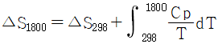
의 식에 의하여 계산되는데 이때 ΔS298의 값은 약 몇 J/mole·K 인가? (단, 298K에서 SCO=47.31, SSℓ=4.50, SC=1.36, SSℓO=10.0, 단위는 cal/°C·mole 이다.)- 169.03J/mole·K
- 274.⑤J/mole·K
- 361.5J/mole·K
- 504.2J/mole·K
(정답률: 54%)
45. 1몰의 수증기가 25°C에서 압력 20mmHg로부터 0.50mmHg까지 등온 팽창할 때 깁스자유에너지 변화값(ΔG)은? (단, 수증기는 이상기체로 가정한다.)
- 0 J/mol
- 1827.6J/mol
- -9144.5J/mol
- 9144.5J/mol
(정답률: 60%)
46. 어떠한 비정질 물질이 임계온도에서 비정질(amorphous)→결정질(crystalline)반응에 의해 결정물질로 된다. 이 반응의 엔탈피 변화량 ΔH와 관련된 설명으로 옳은 것은?
- ΔH는 0 이다.
- ΔH는 음수이다.
- ΔH는 양수이다.
- 물질에 따라 ΔH는 다르다.
(정답률: 70%)
47. 용융염 전해법으로 얻을 수 있는 금속은?
- Cu, Al
- Al, Mg
- Mg, Zn
- Zn, Cd
(정답률: 53%)
48. 용액의 준화학 모형(Quasi-chemical model)에 의한
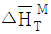
과 라울(Raoult)형 이상거동으로부터의 편차에 대해 옳게 설명한 것은? (단, 그림에서 대각선은 라울형 이상편차를 나타낸다.)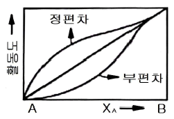
 와 편차는 무관하다.
와 편차는 무관하다. 이 음이면 부편차를 나타낸다.
이 음이면 부편차를 나타낸다. 이 양이면 부편차를 나타낸다.
이 양이면 부편차를 나타낸다. = 0 일 때에만 부편차를 나타낸다.
= 0 일 때에만 부편차를 나타낸다.
(정답률: 79%)
49. 반 데르발스(van der Waals) 방정식을 올바르게 표현한 것은? (단, F는 몰부피를 나타낸다.)
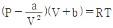
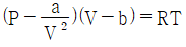
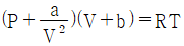
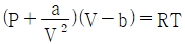
(정답률: 70%)
50. 제게르 추 번호 SK34일 때 내화온도는?
- 1580°C
- 1650°C
- 1750°C
- 1850°C
(정답률: 67%)
51. 이상기체가 상태 1에서 상태2로 변할 때 그 과정에 따라 상태함수의 값이 항상 0(zero)이 될 수 있다. 다음 중 그 함수의 값이 항상 0(zero)이 아닌 것은?
- 단열 가역과정에서 일(W)
- 등온 비가역과정에서 엔탈피 변화(ΔH)
- 등온 가역과정에서 내부에너지 변화(ΔU)
- 단열 가역반응에서 계의 엔트로피 변화(ΔS)
(정답률: 69%)
52. 고체연료에서 인공적으로 제조되는 가스가 아닌 것은?
- 수성가스(water gas)
- 석탄가스(coal gas)
- 천연가스(natural gas)
- 발생로가스(producer gas)
(정답률: 85%)
53. ISP(Imperial Smelting Process) 법에 대한 설명 중 틀린 것은?
- 소결과정을 거친다.
- 용광로 노내에서는 환원반응이 일어난다.
- Pb와 Zn을 용광로에서 동시에 제련하는 방법이다.
- 원료 광석 중 Pb의 품위는 높을수록 조업에 유리하다.
(정답률: 67%)
54. 다음 열역학의 기본식 중 틀린 것은? (단, A : Helmholtz 자유에너지, G : Gibbs 자유에너지, E : 내부에너지이다.)
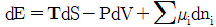
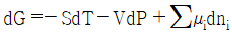
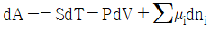
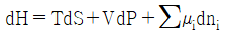
(정답률: 61%)
55. 다음 중 은의 전해 경련법은?
- Dow법
- Mond법
- Moebius법
- Hybinette법
(정답률: 79%)
56. 이상기체 1몰의
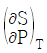
값은 무엇과 같은가? (단, R은 기체상수이다.)- R/P
- -R/P
- 1/T
- -1/T
(정답률: 72%)
57. 부피 팽창에 관계되는 일 이외는 어떤 일도 하지 않는 닫힌계에서 열역학 제ᅵ1법칙과 제2법칙을 결합한 관계식으로 옳은 것은? (단, U : 내부에너지, S : 엔트로피이다.)
- dU = PdV - TdS
- dU = PdV + TdS
- dU = -TdS - PdV
- dU = TdS - PdV
(정답률: 66%)
58. O2의 분압이 10-20atm인 분위기 하에서 NiO-Ni가 평형상으로 공존하는 온도는? (단, 2NiO(s) =2Ni(s)+O2(g) : ΔG°= 489100-197 T(Joule/mole)이다.)
- 743K
- 793K
- 843K
- 893K
(정답률: 63%)
59. 어떤 밀폐된 용기 내에 들어있는 기체의 압력에 관계되지 않는 것은?
- 온도
- 기체의 질량
- 기체의 분자량
- 기체의 독성
(정답률: 87%)
60. 고로에서 사용되는 내화재의 조건이 아닌 것은?
- 열충격이나 마모에 강할 것
- 열전도도 및 냉각효과가 없을 것
- 고온에서 용융, 연화하지 않을 것
- 고온, 고압하에서 상당한 강도를 가질 것
(정답률: 81%)
4과목: 금속가공학
61. 취성파괴의 특징이 아닌 것은?
- 균열의 전파속도가 크다.
- 이온결정의 벽개파괴와 유사하다.
- 미소 소성변형이 거의 없는 빠른 균열전파에 의한 파괴이다.
- 균열전파 전에 상당량의 소성변형을 초래한다.
(정답률: 79%)
62. 평균 압연압력에 관한 설명으로 틀린 것은?
- 윤활상태가 좋을수록 평균 압연압력이 크다.
- 소재의 폭이 크면 평균 압연압력도 크다.
- 롤(roll)의 지름이 작으면 평균 압연압력도 작다.
- 스트립의 두께가 두꺼울수록 평균 압연압력이 크다.
(정답률: 65%)
63. 칼날전위(negative edge dislocation)의 전위선과 그 버거스벡터가 이루는 각은?
- 0°
- 45°
- 90°
- 180°
(정답률: 83%)
64. 탄성계수 E와 체적탄성계수 K의 관계식으로 옳은 것은? (단, ν : 프와송의 비이다.)
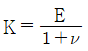
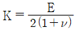
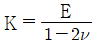
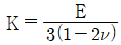
(정답률: 66%)
65. 금속재료에 균일한 인장하중을 가하여 제거한 후 다시 이와 반대방향으로 압축하중을 가하면, 전보다 작은 응력에서 항복이 생기는 것을 무엇이라 하는가?
- Peening효과
- 바우싱거효과
- 가공경화효과
- 크리이프효과
(정답률: 82%)
66. t = 100MPa이고, 기타의 모든 σij = 0 일 때 최대전단응력은 얼마인가?
- 50MPa
- 100MPa
- 150MPa
- 200MPa
(정답률: 73%)
67. 전위의 집적이 생기면 전위의 증식원(源)인 프랭크 리드(Frank Read)원에도 응력이 미치는 것을 무엇이라고 하는가?
- 동적회복
- 시효응력
- 역응력
- 항복강하
(정답률: 66%)
68. FCC금속의 {111}면의 적층결함에 대한 설명으로 틀린 것은?
- 적층결함에너지가 클수록 교차활주가 쉽다.
- 적층결함은 전위의 분해반응과 관련이 있다.
- 적층결함은 {111}면에 수직한<111>축에 대해 45도 회전을 함으로써 생길 수 있다.
- 적층결함의 에너지는 결함주위의 인접원자의 배위수 및 거리의 변화와 관련이 있다.
(정답률: 73%)
69. 단조작업시 금형이 마지막 단계에 이르렀을 때 과잉의 금속은 금형 속으로부터 밀려나서 금속의 얇은 띠가 생기는 것을 무엇이라 하는가?
- 핫티어
- 플래시
- 플레이크
- 산화몰랩
(정답률: 75%)
70. 충격시험에 대한 설명 중 틀린 것은?
- 재료의 연성 또는 취성을 판단하기 위해 시험한다.
- 체심입방정 금속의 노치인성은 온도에 크게 의존한다.
- 연성-취성 천이 온도가 높은 재료가 좋은 재료이다.
- 노치-바(notch-bar) 충격시험으로, 인장시험에서 관찰할 수 없는 재료들 간의 차이를 감지할 수도 있다.
(정답률: 64%)
71. 크리프 강도가 높은 재료가 갖추어야 할 재료 물성 또는 미세조직적 요건 중 틀린 것은?
- 조대한 결정립
- 높은 융점
- 높은 격자저항
- 빠른 확산속도
(정답률: 71%)
72. 변형률 속도감도 m에 대한 설명으로 틀린 것은?
- 초소성금속은 m의 값이 크다.
- 초소성금속의 결정립은 매우 미세하다.
- m이 적으면 국부수축에 대한 저항이 크다.
- 초소성은 고온과 낮은 변형속도에서 나타난다.
(정답률: 57%)
73. 열간가공에 대한 설명으로 틀린 것은?
- 고온가공이므로 기계적 성질의 향상은 기대할 수 없다.
- 고온가공이므로 깨끗한 표면 마무리 작업이 어렵다.
- 장치의 소형화가 가능하지만 가열하는 부대시설이 필요하다.
- 윤활제의 사용이 냉간가공에 비하여 어렵고, 장치의 수명이 짧아진다.
(정답률: 68%)
74. 잔류응력에 대한 설명 중 옳은 것은?
- 전위의 집적은 잔류응력을 없애는 역할을 한다.
- 열간압연 제품의 표면에는 보통 인장 잔류응력이 발생한다.
- 잔류응력은 탄성응력이며 최대치로서 탄성한도의 값을 갖는다.
- shot peening 및 표면압연 등은 피로강도를 저하시킨다.
(정답률: 63%)
75. 임계분해 전단응력의 법칙(Schmid의법칙)을 HCP금속으로 증명하기가 좋은 가장 큰 이유는?
- 슬립방향이 불규칙하므로
- 슬립계의 수가 적기 때문에
- 전단응력의 값이 크기 때문에
- 슬립면과 인장축 사이의 방향 차이를 적게 할 수 있으므로
(정답률: 72%)
76. 금속재료의 항복(yield)은 어느 응력과 관계가 있는가?
- 평균 응력
- 정수 응력
- 등방향 응력
- 편차 응력
(정답률: 60%)
77. 직경 200mm 알루미늄합금 빌렛트를 직경 120mm로 압출할 경우 압출비는 약 얼마인가?
- 0.36
- 1.39
- 2.14
- 2.78
(정답률: 44%)
78. 결정입자 미세화 강화에 대 한설명으로 옳은 것은?
- 결정입계는 전위의 운동을 활성화시키고 슬립하는 전위와 상호작용운동을 한다.
- 결정입계는 전위의 운동을 방해하는 장애물로서 결정입자가 미세할수록 강도가 크게 된다.
- 결정입계는 전위의 운동과는 아무런 상관없이 결정입자가 미세할수록 강도가 크게 된다.
- 결정입계는 전위운동에 장애물로서 결정입자가 미세화 강화에 아무런 관계가 없다.
(정답률: 82%)
79.
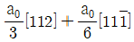
의 값으로 옳은 것은? (단, a0는 격자상수이다.)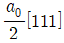
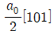
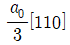
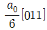
(정답률: 75%)
80. 전단저항이 45kg/mm2이고, 두께가 2mm, 전단 절단구 둘레 길이가 200mm인 강판을 동시에 자르는 데 필요한 최대 전단 하중은 몇 ton 인가?
- 18
- 20
- 34
- 45
(정답률: 53%)
5과목: 표면공학
81. Cu 도금층의 밀착력을 향상시키기 위한 처리방법 중 밀착력이 가장 우수한 것은?
- 인산염 피막처리
- Cu 무전해 도금처리
- 황산욕에서 Cu 스트라이크처리
- 시안화욕에서 Cu 스트라이크처리
(정답률: 62%)
82. 진공증착, 스퍼터링, 이온도금으로 제조된 박막의 특성을 설명한 것 중 틀린 것은?
- 이온도금으로 제조된 박막의 부착강도가 가장 크다.
- 스퍼터링으로 제조된 박막의 도금속도가 가장 빠르다.
- 진공증착으로 박막을 제조할 때 기판의 온도 상승이 가장 작다.
- 진공증착과 이온 금으로 제조된 박막의 도금속도는 거의 비슷하다.
(정답률: 66%)
83. 알루미늄을 흑색으로 착색하기 위해 사용하는 약품은?
- 염화제2철
- 황산구리
- 몰리브덴산암모늄
- 황산니켈암모늄
(정답률: 66%)
84. 금속 위의 착색은 장식, 내식(방식), 광학적 기능을 얻기 위하여 처리 되어진다. 다음의착색 방법 중에서 철강의 착색 방법이 아닌 것은?
- 알칼리 착색법
- 인산염 피막법
- 알로딘(Alodine)법
- 템퍼칼라(Tempercolor)
(정답률: 81%)
85. 공구강을 퀜칭(담금질)할 때에는 균열이나 변형이 발생하기 쉽다. 이러한 균열이나 변형을 방지할 목적으로 퀜칭을 하기 전에 실시하는 열처리는?
- 항온풀림
- 구상화풀림
- 연화풀림
- 응력제거풀림
(정답률: 58%)
86. 물리적증착(PVD)법을 전기도금이나 용사법 등의 표면피복법과 비교하여 장점을 설명한 것 중 틀린 것은?
- 피막의 조성은 고순도가 된다.
- 피막과 기판의 부착력을 조절할 수 있다.
- 플라즈마를 사용하므로 공정을 구성하는 장치가 간단하고 비용이 비교적 저렴하다.
- 플라즈마(Plasma)상태의 화학적 활성을 이용하여 화합물의 피막을 생성시킬 경우 소재의 온도를 광범위하게 변화시킬 수가 있다.
(정답률: 80%)
87. 알루미늄표면에 양극산화된 피막은 많은 봉공을 형성하고 있어 외부오염이나 내식성, 염색 후의 착색 안정성에 취약하다. 이러한 봉공을 처리하는 방법을 옳게 설명한 것은?
- 유기물 봉공처리 – 표면에 도막을 형성시키는 방법
- 금속염 봉공처리 – 오일 등을 도포하거나 침적하는 방법
- 수화 봉공처리 - 비등수, 가압증기에 의한 봉공 처리 방법
- 도장에 의한 봉공 – 금속염을 포함하는 뜨거운 물에 의한 처리
(정답률: 74%)
88. 심냉처리에 관한 설명 중 틀린 것은?
- 공구강에 필요한 열처리이다.
- 심냉처리하면 퀜칭 경도가 증가 된다.
- 잔류오스테나이트를 펄라이트로 변태시킨다.
- 잔류오스테나이트가 존재하면 퀜칭 경도가 저하된다.
(정답률: 76%)
89. 금속용사 전처리 방법이 아닌것은?
- 용착법
- 버프연마법
- 샌드블라스트법
- 쇼트블라스트법
(정답률: 63%)
90. 담금질 균열의 방지 대책으로 틀린 것은?
- 시간담금질을 채용한다.
- 구멍에는 찰흙이나 석면으로 채운다.
- Ms~Mf 범위는 가능한 한 급냉한다.
- 날카로운 모서리를 이루지 않도록 한다.
(정답률: 84%)
91. 내마모강으로 사용하는 고Mn강인 해드필드강을 샤르피충격치 및 연신율이 가장 높게 열처리할 수 있는 열처리 방법은?
- 고탄소강의 열처리 온도인 780°C에서 수냉하였다.
- 고탄소강의 열처리 온도인 780°C에서 서냉하였다.
- 오스테나이트화 온도 1100°C에서 수냉하였다.
- 300°C에서 수인처리하여 750°C에서 풀림처리하였다.
(정답률: 66%)
92. 플라즈마 CVD 방법으로 코팅하는 이유에 해당하지 않는 것은?
- 밀착력의 향상을 위해
- Aspect Ratio를 높이기 위해
- 소지금속의 변형을 예방하기 위해
- 저온에서 코팅이 가능하도록 하기 위해
(정답률: 80%)
93. 주사전자현미경은 초점심도(depth of focus)가 깊어 입체감이 있는 표면영상을 얻는데 매우 유용하다. 이 초점심도를 바르게 나타낸 식은? (단, D는 초점심도,γ은 CRT의 식별가능 최소거리, M은 배율, d은 프로브의 직경, 2α는 대물렌즈의 개구각이다.)
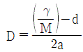
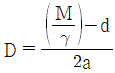
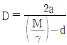
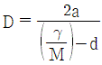
(정답률: 57%)
94. 용접제품의 응력제거 풀림에 의하여 기대되는 효과가 아닌 것은?
- 치수의 변화 방지
- 용접잔류응력의 제거
- 응력부식에 대한 저항력 감소
- 노치인성 및 강도의 증가
(정답률: 69%)
95. PVD 법에서 저항발열원으로 사용하는 내열성 금속이 아닌 것은?
- W
- Cu
- Mo
- Ta
(정답률: 77%)
96. 아연도금 후 변색을 방지하기 위해 처리하는 것은 다음 중 어느 것인가?
- 크로메이트 처리
- 인산염 피막처리
- 라커(Lacquer) 처리
- 크롬도금 처리
(정답률: 68%)
97. 진공증착기가 갖추어야 할 기본사항에 대한 설명으로 틀린 것은?
- 필요한 물질은 단층으로만 증착이 이루어져야 한다.
- 진공펌프는 반응조 내의 기체를 허용 수준까지 감소시킬 수 있어야 한다.
- 진공도와 기타변수를 감시할 수 있는 계기가 부착되어 있어야 한다.
- 진공조는 증착시 필요한 정도의 진공도를 유지할 수 있어야 한다.
(정답률: 83%)
98. 강재의 침탄시 각종원소가 침탄에 미치는 영향으로 옳은 것은?
- Si는 침탄성을 증진시키는 효과가 크다.
- Mn은 침탄성을 저해시키는 효과가 크다.
- Ni은 표면탄소농도 및 침탄깊이를 증가시킨다.
- Cr은 강중에 탄소의 확산속도를 느리게 한다.
(정답률: 74%)
99. 고주파 열처리에 대한 설명으로 옳은 것은?
- 주파수가 높을수록 침투깊이도 증가한다.
- 고유저항 값이 낮을수록 침투깊이는 증가한다.
- 표면, 제품 전체 및 내부 깊은 곳까지 열처리하는 방법이다.
- 차축이나 대형기어 등을 열처리함으로써 질량효과를 경감시킬 수 있다.
(정답률: 56%)
100. 주사전자현미경(SEM)을 통한 이미지 영상을 통해서 알 수 있는 것이 아닌 것은?
- 시료의 기공도
- 입자의 결정방위
- 시료파면의 형태
- 입자의 크기와 분포
(정답률: 74%)